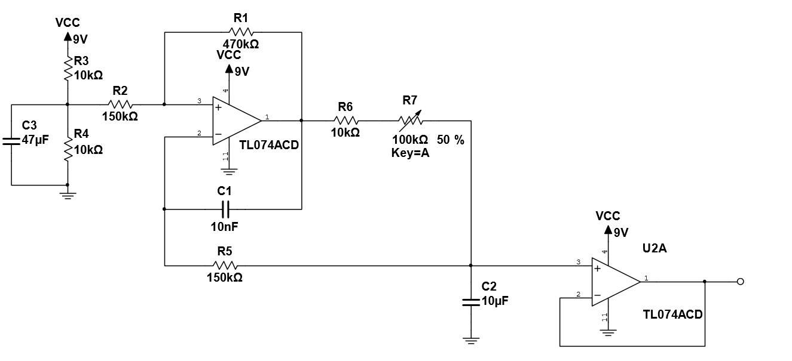
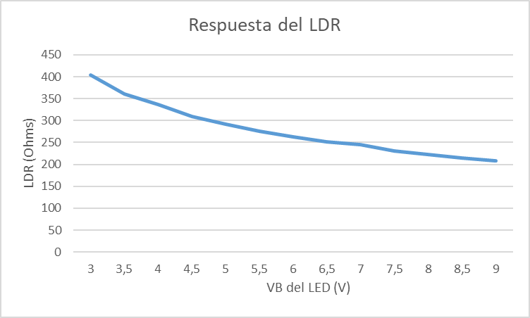

CTRL Control path
LFO→Depth→Gain→Phase splitter
Produces two opposing low-frequency control signals for the optocoupler LEDs.
01 / Analog electronics
A two-band guitar effect that modulates low and high frequencies in opposition using optically controlled gain.


Overview
01The project explores harmonic tremolo as an electroacoustic system rather than a single broadband amplitude control. The input is separated into two bands, whose levels are alternately reduced to create movement in both amplitude and spectral balance.
The system was organized into two main sections:
System architecture
Produces two opposing low-frequency control signals for the optocoupler LEDs.
Separates the guitar signal, modulates each band independently, and passively recombines both branches.
Engineering decisions (ESTA SECCION LA SACARIA)
02Collaboration
03Antonella Croci and I worked together throughout the project: circuit analysis, component selection, assembly, testing, troubleshooting, and technical documentation.
The completed prototype was presented publicly at CAPER 2024 and WorkShow 2024, creating an opportunity to explain both the engineering process and the audible behavior of the effect.
Engineering material (ESTA SECCION TAMBIEN LA SACARIA, SOLO DEJARIA LA DE FULL DOCUMENTATION CON EL RECUADRO)


Full documentation
The complete English report contains the control and audio circuit analysis, filter design, component calculations, final specifications, and conclusions.